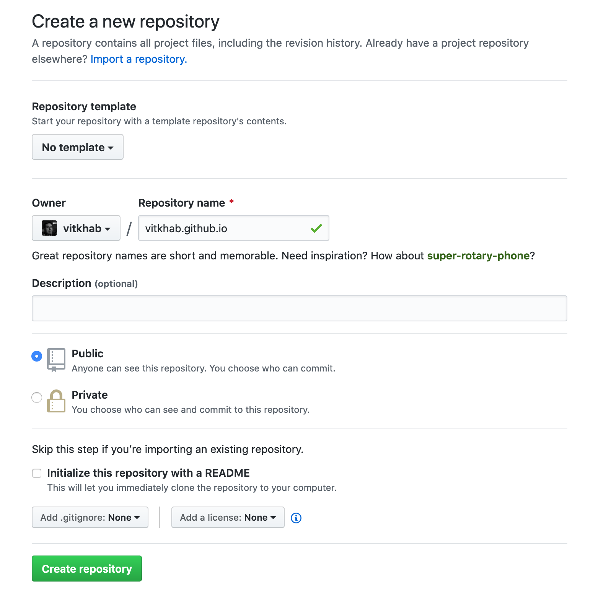

Десять шагов к личному блогу на Github Pages.
Шаг первый. Подготовка инструментов.
Разработчики Hugo подробно описали методы установки на популярные ОС в документации. Hugo с помощью Homebrew и Linuxbrew устанавливается командой:
brew install hugo
Также тебе потребуется git. Методы установки описаны в руководстве по Git.
Теперь тебе доступны команды hugo и git.
Шаг второй. Репозиторий на Github.
Самое время зарегистрироваться на GitHub, если ты этого еще не сделал. Затем создай репозиторий. Имя репозитория должно соответствовать шаблону <OWNER>.github.io, где <OWNER>, здесь и далее, - имя твоей учетной записи или организации, которой принадлежит репозиторий. Репозиторий должен быть публичным и пустым. Сними галочку с Initialize this repository with a README, а переключатели Add .gitgnore и Add a license установи в положение None.

Теперь у тебя есть репозиторий. В нем ты будешь хранить статьи и настройки блога.
Шаг третий. Кодовая база.
Hugo генерирует сайт на основе шаблонов, настроек и исходного текста. Создай основу нового сайта командой:
hugo new site <OWNER>.github.io
Инициализируй git-репозиторий и подключи его к Github'у. Для персональных сайтов вида <OWNER>.github.io, GitHub Pages отображает сайт из ветки master. Ветка будет пустая, пока нету сгенерированного сайта. Выполни команды:
cd <OWNER>.github.io
git init
git commit --allow-empty -m "Initializing master branch"
git remote add origin git@github.com:<OWNER>/<OWNER>.github.io.git
git push -u origin master
Саму кодовую базу, исходники из которых генерируется сайт, будем хранить в ветке devel. Так мы разделим исходный код и результирующий артефакт. Сможем работать с ними независимо. Выполни команды:
git checkout -b devel
git add --all .
git commit -m 'Initial commit'
git push -u origin devel
Шаг четвертый. Выбор и установка стиля.
Выбери подходящий твоему блогу стиль на сайте тем Hugo. Подключи лучшую тему как субмодуль git командой вида, для примера используется тема mediumish:
git submodule add https://github.com/lgaida/mediumish-gohugo-theme themes/mediumish
Тему можешь скачать в директорию <OWNER>.github.io/themes или склонировать репозиторий с темой в ту же директорию. Я предпочитаю использовать субмодули. Темы можно легко обновлять из источника. Тему можно дополнить модулями в директории <OWNER>.github.io/layouts. Почитать о выборе между использование git clone или git submodule для тем Hugo можешь в обсуждении.
Шаг пятый. Настройка Hugo.
Настало время настроить Hugo. Отредактируй файл config.toml до следующего содержания, не забудь изменить параметры под свой сайт:
# Адрес твоего сайта
baseURL = "https://<OWNER>.github.io/"
# Язык сайта, для английского используй "en-us"
languageCode = "ru-ru"
# Название твоего сайт
title = "Супер бложик"
# Используемая тема
theme = "mediumish"
# Сюда Hugo сохранит сгенерированный сайт
publishdir = "./public/"
Шаг шестой. Директория для публикации.
Исходный код и сам сайт хранятся в разных ветках. Переключаться между ними и переносить изменения - неудобно. Поэтому подключи ветку master в рабочую директорию в каталог public командами:
git worktree add -B master public origin/master
echo "public" >> .gitignore
git add .gitignore
git commit -m 'Add .gitignore'
Данную операцию придется повторять при создании рабочей директории, на каждом рабочем компьютере. Генерацию сайта можно передать CI-системе и забыть о ручных изменениях.
Шаг седьмой. Публикация главной страницы.
Пора опубликовать сайт. Для начала сгенерируй его командой:
hugo
А теперь загрузи его на GitHub командами:
pushd public
git add .
git commit -m 'Add index page'
git push
popd
И тут твой сайт должен бы стать доступным. Но, в силу неизвестных мне причин, GitHub Pages стабильно подхватывает новый сайт только после второго-третьего коммита. Не растраивайся, скоро мы его сделаем.
Шаг восьмой. Первый пост.
Создай первый пост командой:
hugo new blog/first-post.md
Hugo подготовит шаблон для новой страницы. Открой файл blog/first-post.md и отредактируй его. В начале ты увидишь блок с метаданными поста, после которых начинается сам текст статьи в формате markdown, хотя ты можешь использовать другой формат.
---
# Название статьи
title: "Блог на Github Pages для начинающих"
# Дата создания статьи
date: 2019-12-25T21:32:05+03:00
# Тэги статьи
tags: ["github pages", "blog", "hugo"]
# Флаг черновика, пока он в значении "true", Hugo не будет обрабатывать эту статью
draft: false
# Включены ли комментарии
comments: true
# Краткое описание статьи
summary: "Пошаговая инструкция по созданию блога на Github Pages на Hugo"
---
Конечно же, первый пост должен быть о том, как сделать свой собственный блог. Можешь взять за основу исходный текст статьи, которую ты сейчас читаешь ;)
Шаг девятый. Навигационное меню.
Создай на сайте навигационное меню. Для этого добавь в файл config.toml строки:
[[menu.main]]
# Отображаемое название раздела
name = "Статьи"
# Вес для сортировки пунктов меню, чем меньше - тем раньше пункт будет отображен
weight = 100
# Идентификатор родителя для вложенных пунктов, не все темы поддерживают вложенность
identifier = "blog"
# Путь до раздела со статьями, соответствует имени папки внутри <OWNER>.github.io/content/
url = "/blog"
Для добавления нового пункта, добавь еще один блок [[menu.main]] целиком.
Шаг десятый. Profit!
Ты проделал всю необходимую подготовительную работу. Сохрани изменения кодовой базы:
git add .
git commit -m 'Add index page, first post, navigation menu and config'
git push
Сгенерируй сайт и загрузи изменения на Github.
hugo
pushd public
git add .
git commit -m 'Publish first post'
git push
popd
Подожди пару минут, пока GitHub Pages отработает изменения. Зайди на свой персональный сайт https://<OWNER>.github.io/ и насладись результатом!
Режим Pro или что дальше?
А дальше нужно автоматизировать генерацию сайта с помощью CI, настроить красивый персональный домен, подключить комментарии и настроить систему аналитики GoogleAnalytics. Об этом я расскажу в следующих постах.
Stay tuned!